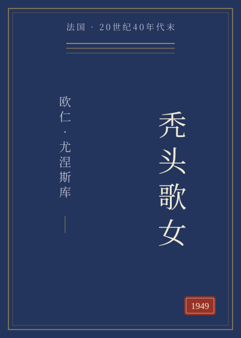
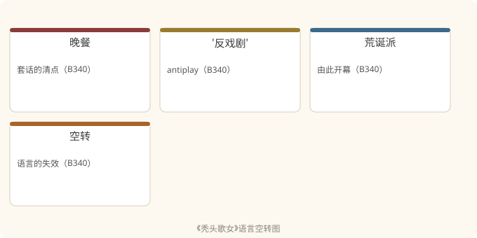

秃头歌女
一、基本信息
| 作者 | 欧仁·尤涅斯库 |
|---|---|
| 成书/出版 | 1949年（Britannica B340：La Cantatrice chauve (1949; The Bald Soprano)） Eugene Ionesco — Encyclopaedia Britannica（百科全书） |
| 国别/地区 | 法国 |
| 时代 | 现当代 · 20世纪40年代末 |
| 体裁 | 独幕剧 |
| 语言 | 法语 |

《秃头歌女》语言空转图（主题·结构图）
二、创作背景
Britannica（B340）：'one-act antiplay'——'inspired a revolution in dramatic techniques and helped inaugurate the Theatre of the Absurd'（其独幕'反戏剧'引发戏剧技巧革命并促成荒诞派）。
Britannica（B340）：'masterly catalog of senseless platitudes'（对陈腐套话的大师级清点）。
Britannica（B340）：尤涅斯库自称其戏剧为'theatre of derision'（嘲弄的戏剧）。
三、内容脉络
'反戏剧'：一场由陈词滥调组成的晚餐对话（B340：catalog of senseless platitudes——剧情细节通说待核）。
剧终人物互换与循环：'秃头歌女'并未出现（剧终细节通说待核）。
四、主要人物表
| 人物 | 身份 | 说明 |
|---|---|---|
| 马丁夫妇/史密斯夫妇 | 两对中产夫妇 | （通说待核，B340未载） |
| 消防队长 | 来客 | （通说待核，B340未载） |
五、主题与艺术特点
- 中产生活的荒诞（B340：the absurdity of bourgeois life）。
- 语言的失效：套话的空转（B340：senseless platitudes）。
- '反戏剧'的形式宣言（B340：antiplay / antilogical）。
六、影响与评论
- Britannica：'inspired a revolution in dramatic techniques and helped inaugurate the Theatre of the Absurd'（B340）。
Eugene Ionesco — Encyclopaedia Britannica（百科全书） - Britannica：与贝克特等同为荒诞派源头（作者页 B340 定位）。
Eugene Ionesco — Encyclopaedia Britannica（百科全书）
七、阅读建议
难点
- '反戏剧'的舞台惯例。
- 伦敦腔套话的法语戏仿（原文语境）。
- 《秃头歌女》中译本（人民文学《荒诞派戏剧集》等——通说待核）。
- 法文原版。
荒诞派入门首选；后接《犀牛》《等待戈多》。
八、待核实
- 1949年首演（Théâtre des Noctambules说）与导演（Nicolas Bataille说）待核。
- 史密斯/马丁夫妇人名核对（B340未载）。
- 'antiplay'一词通行译法待核。
本页主要来源
相关作品：等待戈多六个寻找剧作家的角色雷雨